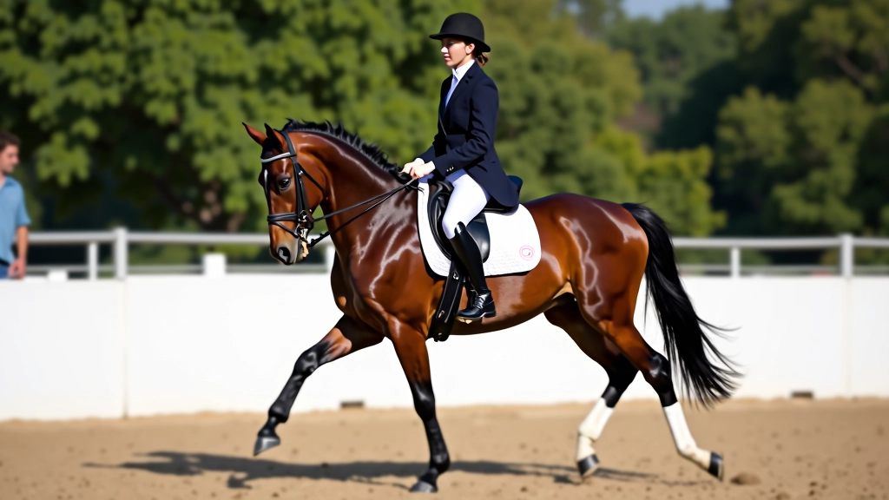
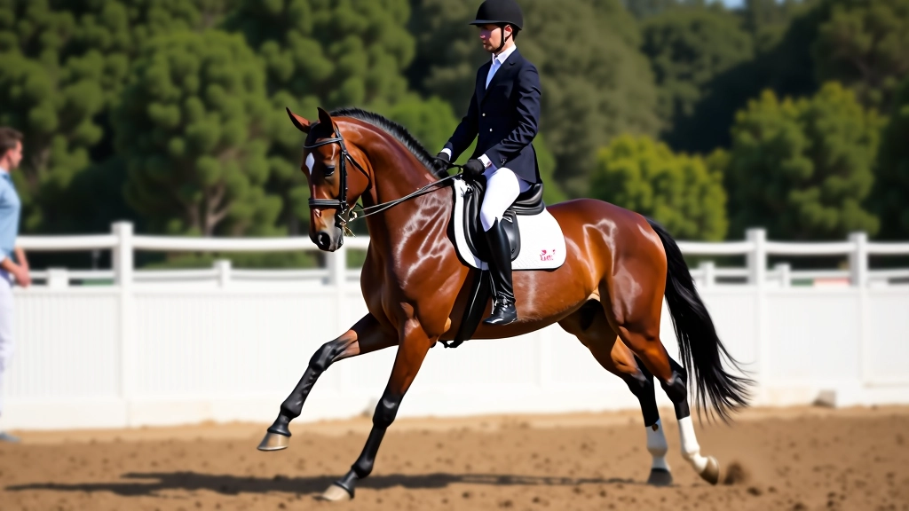
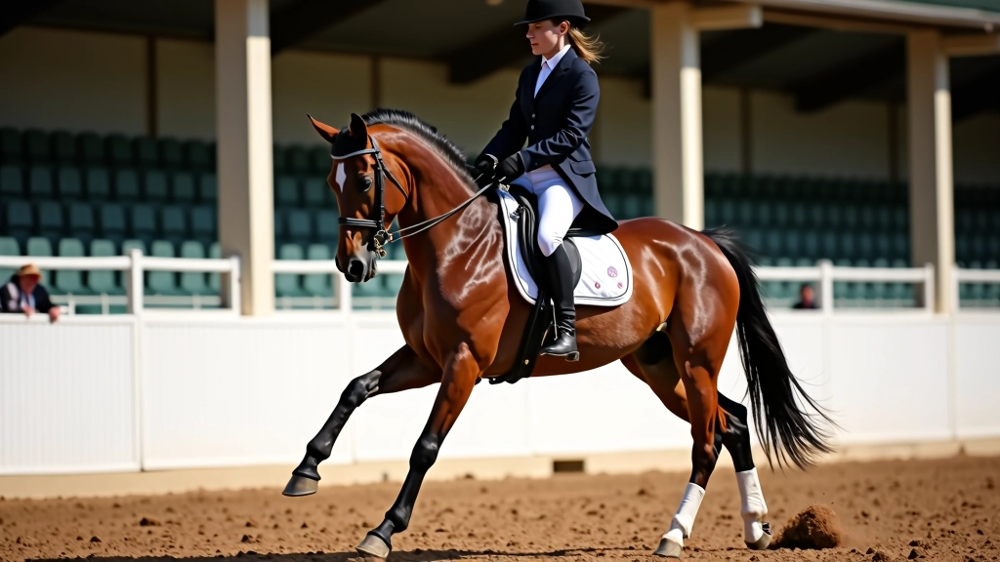

أساسيات الجلسة الصحيحة والتوازن على الحصان
شرح مفصل لكيفية جلوس الفارس بشكل صحيح، موضع الساقين والحوض، والحفاظ على التوازن
تحسين جودة الخطوات الأساسية للحصان يُعتبر أساس أي برنامج تدريب ناجح. في هذا الدليل، نستعرض التمارين العملية التي تُطور قوة الحصان وارتفاع حركاته، وتصل به إلى مستويات متقدمة من الأداء.

الخطوة الجيدة ليست فقط مسألة جمالية — هي أساس الصحة الحركية للحصان. عندما يتحرك الحصان بخطوات قوية ومنتظمة، يقلل من الإجهاد على مفاصله ويحسّن توازنه. هذا يعني أداء أفضل في التمارين المتقدمة لاحقاً.
نحن نركز على ثلاث مراحل أساسية: تحسين الخطوة العادية، زيادة ارتفاع الحركة، والوصول إلى الخطو العالي. كل مرحلة تبني على السابقة، ولا يمكن تسريع العملية بدون أساس متين.
قبل الذهاب أبعد من ذلك، يجب أن تتأكد من أن الحصان يسير بخطوة عادية سليمة. هذا يعني أن يكون هناك تناغم في الحركة بين الأرجل الأربع، مع عدم وجود تسارع أو تباطؤ مفاجئ.
ابدأ بالسير على خطوات مستقيمة في الحلبة. لاحظ إن كان الحصان يميل إلى جانب أو يثني رقبته بشكل غير طبيعي. تمارين السير البسيطة في خطوط مستقيمة ودوائر كبيرة تساعد على بناء الأساس الصحيح. استغرق هذه المرحلة 2-3 أسابيع على الأقل.
نصيحة عملية: راقب انتظام الخطوات من خلال الاستماع — يجب أن تسمع أربع ضربات منتظمة عند الخطو.


بعد 3-4 أسابيع من التمارين الأساسية، يمكنك البدء في تطوير ارتفاع الحركة. هنا يأتي دور التمارين المتقدمة قليلاً — نحتاج إلى تقوية العضلات الخلفية للحصان بشكل منتظم.
جرب تمرين الخطو والتوقف المتكرر: امش الحصان خطوات قليلة ثم أوقفه تماماً لمدة 3-5 ثوان، ثم استأنف الحركة. هذا التمرين يعلم الحصان التحكم بقوته وينمي عضلات الأرجل الخلفية. كرر هذا 6-8 مرات في كل جلسة تدريب.
لاحظ أن الحصان سيبدأ بالاستجابة بشكل أسرع — هذا علامة إيجابية. زد الارتفاع تدريجياً على مدى 2-3 أسابيع إضافية.
هذا الدليل يوفر معلومات تعليمية عامة عن تمارين الفروسية. كل حصان فريد من نوعه — قد تحتاج إلى تعديل البرنامج بناءً على عمر الحصان، مستوى تدريبه، وحالته الصحية. نوصي باستشارة مدرب فروسية متخصص قبل بدء أي برنامج تدريبي جديد.
الخطو العالي يتطلب أساساً قوياً جداً. بعد 6-8 أسابيع من التدريب المنتظم، يمكنك البدء في تطبيق تمارين أكثر تقدماً. هنا نركز على زيادة الارتفاع والحفاظ على الانتظام في نفس الوقت.
استخدم تمرين "الخطو على الخطوط" — ضع خطوطاً على الأرض (أو استخدم مسافات محددة مسبقاً) وعلّم الحصان أن يخطو فوقها برفع أرجله أعلى قليلاً. هذا يحسّن الوعي بحركة أرجله ويزيد من القوة المطلوبة. جرب هذا 2-3 مرات أسبوعياً.

تطوير خطوة الحصان عملية تدريجية تتطلب صبراً والتزاماً. لا تتسرع في الانتقال من مرحلة إلى أخرى — الأساس القوي يضمن نتائج أفضل على المدى الطويل.
خطوات منتظمة على خطوط مستقيمة ودوائر كبيرة لمدة 2-3 أسابيع
استخدم تمارين التوقف والخطو لتقوية الأرجل الخلفية
الخطو على الخطوط والتمارين المتقدمة بعد 6-8 أسابيع من التدريب
تذكر أن كل حصان يتطور بسرعته الخاصة. بعض الأحصنة قد تحتاج إلى وقت أطول قليلاً، وهذا طبيعي تماماً. الاستمرارية والصبر هما المفتاح الحقيقي للنجاح في تطوير الخطوة.

فريق التحرير
كتبه فريق التحرير بفرسان الحلبة، متخصص في توفير إرشادات عملية وموثوقة عن تمارين الفروسية. نحن نجمع بين الخبرة الميدانية والمعرفة النظرية لتقديم محتوى مفيد للفرسانين من جميع المستويات.
شرح مفصل لكيفية جلوس الفارس بشكل صحيح، موضع الساقين والحوض، والحفاظ على التوازن

استخدام الدوائر والمربعات والخطوط لتطوير مرونة الحصان الجانبية والتحكم الدقيق

برنامج شامل للفرسان المتقدمين يغطي الحركات المعقدة مثل البيرويت والحركات المزدوجة